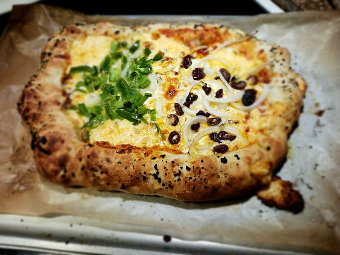

Pizza recipe

Description
We will made some neapolitanien like pizza. Which you can customize to your likings by adding toppings.
Ingredience
- 300g of all purpos flour
- 2g Yeast
- 140g of water
- salt
- tomato sauce
- spice you like
- toppings after your liking
Steps
- But the yeast into the water and stire until the yeast has disolved
- Add some flour and keep staring until you see no lumps then its time to add the salt
- Add rest of the flour and kepp stering until the dough thickens
- Knead the dough for at least 20 mins. If you got a kneading mashine 10 minutes are enought.
- ...